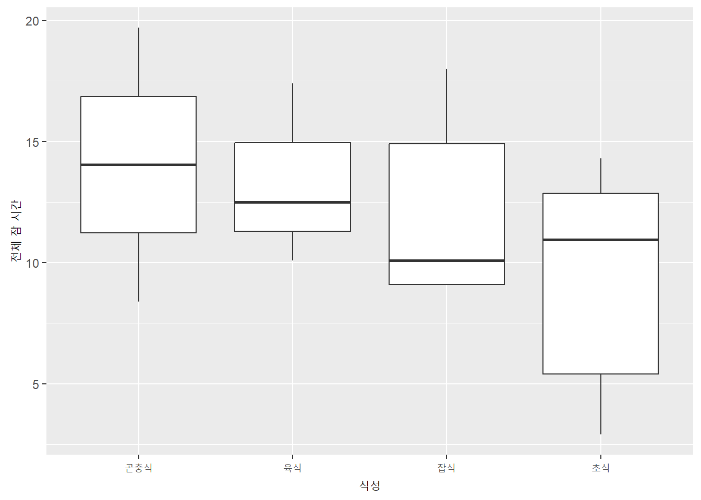

총합 <- sum(155*1, 165*3, 175*4, 185*2)
cat("총합은 ", 총합, "입니다.")총합은 1720 입니다.기술 통계는 관찰 대상의 속성을 조사하여 추론하지 않고 그대로 제시하는 통계를 말합니다.
빈도 frequency 는 측정 단위의 숫자, 관찰의 숫자, 혹은 사례의 숫자를 말합니다. 만일 사람 20명의 키를 측정했다면 관찰 빈도는 20입니다. 키가 170cm인 사람이 15명이면 키 170cm의 값에 해당하는 빈도는 15가 됩니다. 빈도를 나타내는 데 도수라는 용어도 많이 사용합니다. 빈도와 도수, 빈도분포와 도수분포는 같은 뜻입니다. 상대빈도 relative frequency 는 해당 빈도를 전체 빈도로 나눈 것입니다. 만일 전체 10명에서 여자가 4명, 남자가 6명이라면 여자의 상대빈도는 0.4 또는 40%, 남자는 0.6 또는 60%입니다.
빈도분포 frequency distribution 는 측정한 점수를 크기 순서대로 체계화해서 측정 척도에 맞도록 범주화한 것입다. 예를 들어, 측정한 키가 각각 159, 161, 162,168 171, 173, 175, 177, 182, 183이라면 아래 표와 같이 보기 좋게 범주화해서 정리합니다. 이러한 표를 빈도분포표라고 합니다.
| 키 x | 빈도 \(f\) | 상대빈도 |
|---|---|---|
| 150-160cm | 1 | 0.1 |
| 160-170cm | 3 | 0.3 |
| 170-180cm | 4 | 0.4 |
| 180-190cm | 2 | 0.2 |
| 합 | 10 | 1 |
빈도분포에서 총합은 x값과 그 값의 빈도를 곱해서 모두 더하면 됩니다.
\[총합 = \sum xf\]
참고로 위의 수식을 표현하는 콸토 방법은,
$$총합 = \sum xf$$위의 빈도분포표처럼 수치를 범주화해서 정리했다면 중간 값을 취해서 빈도를 곱한 다음에 모두 더합니다.
Example 6.1
위 빈도분포표(Table 6.1)의 키 총합을 구하세요.
답
총합 <- sum(155*1, 165*3, 175*4, 185*2)
cat("총합은 ", 총합, "입니다.")총합은 1720 입니다.중앙을 중심으로 서로 닯은 꼴인 분포를 대칭 분포라고 하고, 중앙을 중심으로 서로 다른 것을 비대칭 분포라고 합니다. 분포의 양끝은 대개 좁고 길게 늘어지게 마련인데 그것을 꼬리 tail 라고 부릅니다. 꼬리가 오른쪽이 더 길면 정적 비대칭이고, 왼쪽이 더 길게 늘어지면 부적 비대칭입니다.
빈도, 도수, 상대빈도, 빈도분포표, 대칭분포, 비대칭분포, 꼬리
기술 통계의 목적 중 하나는 집단을 대표하는 값을 산출하는 것입니다. 평균이 가장 흔하게 이런 목적으로 쓰입니다. 평균처럼 집단의 속성을 나타내는 대표성을 가지는 값을 집중화 경향치 central tendency (or measure of central tendency) 라고 합니다. 평균, 중앙값, 최빈값 등이 자주 사용되는 집중화 경향치입니다.
R에는 각 기본패키지를 비롯하여 여러 패키지가 데이터셋을 내장한 경우가 많습니다. 기본패키지가 내장한 iris 데이터셋의 Pedal.Length라는 변수를 이용하여 집중화 경향치를 산출해 봅니다.
mean(iris$Petal.Length) # 평균
median(iris$Petal.Length) # 중앙값
max(iris$Petal.Length) # 최대값
min(iris$Petal.Length) # 최소값
sd(iris$Petal.Length) # 표준편차
var(iris$Petal.Length) # 분산
quantile(iris$Petal.Length) # 사분위값[1] 3.758
[1] 4.35
[1] 6.9
[1] 1
[1] 1.765298
[1] 3.116278
0% 25% 50% 75% 100%
1.00 1.60 4.35 5.10 6.90 평균 average 은 산술평균 arithmatic mean 이라고 부르기도 합니다. 모든 측정값의 합을 측정값의 갯수로 나눈 값입니다. 집중화 경향치로 가장 많이 사용합니다. 계산법은 아래와 같습니다. 위는 모집단의 평균이고 아래는 표본의 평균이지요. 방법은 둘이 동일합니다.
\[ \mu = \frac{1}{N}\sum_{i=1}^{N}x_i = (\frac{1}{N})(x_1 + x_2 + x_3 + ... +x_N)\]
\[ \bar x = \frac{1}{n}\sum_{i=1}^{n}x_i = (\frac{1}{n})(x_1 + x_2 + x_3 + ... +x_n)\]
참고: 총합인 \(\sum x\) 를 \(\frac{1}{n}\) 로 곱한 것은 총합 \(\sum x\) 를 \(n\) 로 나눈 것과 마찬가지입니다.
\[\frac{1}{n}\sum x = \frac{\sum x}{n}\]
가중평균 weighted average 은 이미 평균을 산출한 여러 집단을 합친 전체 집단의 평균을 계산할 때 사용합니다. 예를 들어, 한국대학의 남자 키 평균과 여자 키 평균이 있을 때 그 둘을 더해서 2로 나눈다고 전체 평균이 되지 않습니다. 남자 수와 여자 수가 다르기 때문에 그것을 고려해야 합니다.
\[\bar x_w = \frac{\sum_{i=1}^{k}w_i\bar x_i}{\sum_{i=1}^{k}w_i}\]
여기에서 \(k\): 평균의 수, \(\bar x_i\): \(i\) 번째 평균, \(w_i\): \(i\) 번째 평균의 가중치.
Example 6.2
남자 100명 여자 150명으로 구성한 어떤 집단에서, 남자 키 평균이 175cm고 여자 평균이 165cm라면 전체 평균은 얼마가 되어야 할까요?
답: 남자 평균 가중치는 100, 여자 평균 가중치는 150입니다. 따라서 전체 평균은 169cm.
\[가중평균 \; \bar{x}_w = \frac{(100*175) + (150*165)}{100 + 150}=169\]
참고로 위의 Quarto 수식을 표현하는 방법은,
$$가중평균 \; \bar{x}_w = \frac{(100*175) + (150*165)}{100 + 150}=169$$
참고: \bar{x}, \bar{x}_w, \frac{}{}중앙값 median 은 분포를 정확하게 반으로 나누는 측정값을 말합니다. 즉 측정값들을 크기 순서로 늘어놓았을 때 가운데 오는 값이 중앙값입니다. 측정값의 수가 홀수라면 가운데 값이 중앙값입니다. 즉 측정값이 1, 2, 2, 4, 5, 이렇게 다섯이라면 세번째의 2가 중앙값입니다. 짝수라면 가운데 값이 두 개가 될 수도 있어요. 즉 측정값이 1, 2, 2, 4, 5, 6, 이렇게 여섯이라면 세번째의 2와 네번째의 4가 달라서 곤란합니다. 이럴 때 두 수의 평균을 중앙값으로 합니다. 여기서는 \(\frac{2+4}{2} = 3\) 이므로 3이 중앙값입니다.
극단값은 대부분의 값에서 멀리 떨어진 예외적인 값들을 말합니다. 평균이 극단값의 영향을 크게 받는 경우에 평균보다 중앙값이 더 대표성을 갖게 됩니다. 또 비대칭분포가 심할 경우에도 역시 중앙값의 대표성이 평균의 대표성보다 높습니다. 일반적으로 한 국가의 개인소득에서 부유한 극소수가 평균 소득을 높이게 되므로 한 국가의 일반적인 개인소득은 평균보다 중앙값으로 대표하는 게 적절합니다.
분포에서 빈도가 가장 높은 값이 최빈값 mode 입니다. 빈도 분포표가 계급구간으로 구성된 경우 빈도가 가장 높은 구간값을 최빈값으로 합니다. 예를 들어, 측정값이 1, 1, 2, 3, 3, 3, 4, 5, 6, 6, 6, 6, 6, 이렇다면 6이 5개로 가장 많으니 최빈값은 6입니다. 최빈값은 그 특성상 여러 개가 있을 수 있습니다. 최빈값은 명목척도를 대표할 때 자주 사용합니다. 예를 들어, “옷 색깔에서 파란색을 선택한 사람이 가장 많았다”는 표현은 명목척도에서 최빈값의 대표성을 이용한 것입니다.
사람의 수명을 말할 때도 평균 수명보다 유용합니다. 신생아의 상대적 사망율이 높아서 평균이 왜곡되기 때문입니다. 사망 나이의 최빈값을 택하는 것이 성인의 사망나이를 추정할 때 효율적입니다. 또 이산변수일 때도 소수점 아래를 말하기 어려울 때 유용합니다. 주택을 말할 때 3.6 채보다는 4채가 더 익숙합니다.
빈도분포가 대칭적이면 집중화경향치는 평균, 중앙값, 최빈값이 상당히 비슷합니다. 이때는 평균이 대표성이 가장 높습니다. 그러나 비대칭분포일 때는 세 집중화경향치가 차이가 있습니다. 극단적인 비대칭분포일 때 중앙값은 극단값의 영향을 잘 받지 않기 때문에 중앙값의 대표성이 더 우수합니다. 최빈값은 명목척도나 대략적인 경향을 알아보려 할 때 좋습니다.
위키피디아의 집중경향치 비교도 클릭해서 참고로 보면 좋습니다.
집중경향치는 전체 측정값을 대표하는 값으로 대체로 측정값의 중심을 나타냅니다. 측정값이 어떤 형태로 분포되어 있는가 하는 것은 또 다른 방법이 필요합니다. 측정값이 넓게 또는 좁게 퍼져 있는 정도를 나타내는 게 분산도 dispersion, variability, scatter 다. 분산도를 보여주는 방법은 범위, 표준편차, 분산, 사분위편차 등이 있습니다.
분산도
범위 range 는 측정값에서 최대값 maximum 과 최소값 minimum 의 차이를 말합니다. 극단값이 있는 경우에 범위가 크기 증가하므로 적절한 방법이 되지 못합니다. 극단값이 아니라도 최소값과 최대값의 단 두 개 값이 크기를 좌우하므로 바람직하지 않습니다.
범위, 최대값, 최소값
표준편차 standard deviation 는 분산도를 나타내는 가장 대표적인 방법입니다. 측정값들이 평균에서 멀리 흩어진 정도를 알려줍니다. 표준편차는 분산의 제곱근입니다. 분산 variance 은 측정값과 평균의 차이를 제곱해서 모두 합한 것을 총 빈도로 나눈 것입니다. 측정값과 평균의 편차를 그대로 더하지 않고 제곱해서 더 한 이유는 편차가 \(+\) 와 \(-\) 가 섞여 있므로 총합이 언제나 0가 되기 때문입니다. 편차의 절대값을 다 더해서 평균을 낸 평균편차 mean deviation 라는 방법도 있으나 통계에서 거의 사용하지 않습니다. 평균과 표준편차는 자료를 가장 흔하게 대표하는 두 방법입니다. 자료의 중심과 흩어진 정도를 각각 알려줍니다.
\(\sigma\): 모집단 표준편차, \(N\): 모집단 측정값의 빈도, \(\mu\): 모집단 측정값의 평균
\[ 모집단 \; 분산 \; \; \sigma^{2} = \frac{1}{N}\sum_{i=1}^{N} (x_i-\mu)^{2} = \frac{\sum_{i=1}^{N} (x_i-\mu)^{2}}{N}\]
\[ 모집단 \; 표준편차 \; \; \sigma =\sqrt{\frac{1}{N}\sum_{i=1}^{N} (x_i-\mu)^{2}}=\sqrt{\frac{\sum_{i=1}^{N} (x_i-\mu)^{2}}{N}}\]
참고: 위 계산식의 Quarto 표현
$$ 모집단 분산 \sigma^{2} = \frac{1}{N} \sum_{i=1}^{N} (x_i-\mu)^{2} = \frac{\sum_{i=1}^{N} (x_i-\mu)^{2}}{N}$$
$$ 모집단 표준편차 \sigma =\sqrt{\frac{1}{N} \sum_{i=1}^{N} (x_i-\mu)^{2}}=\sqrt{\frac{\sum_{i=1}^{N} (x_i-\mu)^{2}}{N}}$$
$$, \sigma, \sigma^{}, \frac{}{}, \sum_{}^{}, \sum, \mu, ^{}, \sqrt{}, \bar x, x_i
문장 안에서는 양쪽에 $ 하나씩, 별도의 줄 가운데에 놓으려면 맨앞과 맨뒤에 각각 $$
$n$, $n-1$\(s\): 표본 표준편차, \(n\): 표본 크기, \(\bar x\): 표본 평균
\[ 표본 \; 분산 \; \; s^{2} =\frac{1}{n-1}\sum_{i=1}^{n} (x_i-\bar x)^{2}=\sqrt{\frac{\sum_{i=1}^{n} (x_i-\bar x)^{2}}{n-1}}\]
\[ 표본 \; 표준편차 \; \; s =\sqrt{\frac{1}{n-1}\sum_{i=1}^{n} (x_i-\bar x)^{2}}=\sqrt{\frac{\sum_{i=1}^{n} (x_i-\bar x)^{2}}{n-1}}\]
표준편차와 분산은 모집단을 위한 공식과 표본을 위한 공식이 다릅니다. 이것은 표본의 표준편차가 모집단의 표준편차를 추론하려는 방법인데, 똑같이 측정값의 빈도로 나누면 추론에서 왜곡이 생기기 때문입니다. 표본 크기가 작을수록 왜곡이 크고 표본 크기가 커질수록 왜곡이 작아지는데 이걸 보정해서 정확하게 추론하는 방법이 \(n\) 대신에 \(n-1\) 로 나누는 겁니다. 나중에 확률 부분에서 다시 논의합니다.
표본의 표준편차를 계산할 때 사용한 \(n-1\) 을 자유도 degree of freedom 라고 합니다. 표준편차의 계산 과정에서 평균과의 편차를 산출하는 데, 이때 모평균을 사용해야 이론적으로 맞습니다. 왜냐하면 표본의 표준편차를 구하는 이유가 모표준편차를 추정하려는 것이므로 모평균을 넣어야 하는 겁니다. 하지만 우리는 모평균을 모르므로 표본평균을 대신 사용했습니다. 표본평균을 대신 사용하는 순간 자유도가 하나 줄어들어서 \(n\)이 아닌 \(n-1\) 이 됩니다.
예를 들어, a, b, c, 세 수의 평균이 5 라고 합시다. a=4, b=5 라면 c는 반드시 6이 되어야 합니다. a=3, b=9 라면 c는 반드시 3이 되어야 합니다. 이처럼 평균이 정해져도 두 수는 자유롭게 값을 정하지만 마지막 하나는 일정한 값을 가져야하므로 자유가 없는 겁니다. 그래서 모평균 대신에 표본평균을 이용하는 순간 자유도가 \(n-1\) 이 되었습니다.
현실적인 예를 들어보죠. 철수, 영희, 복길이의 나이가 각각 20살, 22살, 24살입니다. 나이평균은 (20+22+24)/3 = 22. 분산은 (20-22)2 + (22-22)2+(24-22)2인데 이것은 중간이 0이므로 (20-22)2 + (24-22)2과 같습니다. 즉 사례가 하나 없어진 것과 마찬가지죠. 그래서 표본 평균이 모집단 평균을 대체할 때 편차 제곱의 합에서 사례가 하나 적어진 것 같은 편향이 생깁니다.
표준편차, 분산, 평균편차, 자유도
측정값을 큰 순서대로 늘어놓았을 때 측정값들이 사등분되는 즉 각각25%, 50%, 75% 되는 위치의 측정값을 사분위수 quartile 라고 합니다. 25% 위치를 제1사분위 \(Q_1\), 50% 위치를 제2사분위 \(Q_2\), 75% 위치를 제3사분위 \(Q_3\) 라고 합니다. 제2사분위를 중위수라고 부르기도 합니다. 제1사분위와 제3사분위의 차이를 2로 나눈 값이 사분위편차 quantile deviation 입니다. 2로 나누지 않은 값을 사분위범위 interquantile range 라고 구분합니다. 사분위편차는 양끝에 존재하는 극단값을 배제하므로 예외적인 사례의 영향을 더 받는 게 장점입니다. 그러나 빈도가 25보다 적다면 다소 불안하므로 적정한 빈도가 되는 게 바람직합니다.
사분위편차: \(Q = \frac{Q_3-Q_1}{2}\), 사분위범위: \(IRQ = Q_3-Q_1\)
박스플롯은 사분위편차와 밀접한 관련이 있습니다. 박스플롯은 중앙값, 1사분위, 3사분위, 최소값, 최대값, 극단값 등을 나타냅니다. 아래는 ggplot2 패키지의 msleep 데이터셋을 이용해서 그룹의 박스플롯을 보여줍니다.
library(ggplot2)
library(dplyr)
msleep <- na.omit(msleep) # 결측값 사례를 제거
msleep$식성 <- recode(msleep$vore, "carni" = "육식", "herbi" = "초식", "insecti" = "곤충식", "omni" = "잡식")
ggplot(msleep, aes(식성, sleep_total)) +
geom_boxplot() +
xlab("식성") +
ylab("전체 잠 시간")
사분위수, 제1사분위, 제2사분위, 제3사분위, 사분위편차, 사분위범위
변동계수 coefficient of variation 는 표준편차를 평균으로 나눈 것입니다. 상대 표준편차 relative standard deviation 라고도 합니다. 표준편차는 크기가 측정단위에 영향을 받습니다. 그래서 측정 단위가 다른 자료를 비교할 때 변동계수를 사용하지요. 변동계수는 0이 의미를 가지는 비율척도에만 사용해야 합니다. 등간척도에 사용하면 왜곡된 결과가 나올 가능성이 높으므로 사용하지 않습니다.
\[ CV = \frac{\sigma}{\mu} \rightarrow \frac{s}{\bar x}\]
참고로 위의 표현식은
$$ CV = \frac{\sigma}{\mu} \rightarrow \frac{s}{\bar x}$$그래서 사분위분산계수 quantile coefficient of dispersion 를 더 선호하기도 합니다. 사분위분산계수는 극단값에 영향을 덜 받는 장점도 있습니다.
\(QCD = \frac{Q_3-Q_1}{Q_3+Q_1}\)
변동계수, 상대표준편차, 사분위분산계수
측정 단위가 다른 자료를 비교하기는 어렵고, 평균과 표준편차가 다를 때 역시 자료를 비교하기가 곤란합니다. 이럴 때 표준화한 측정값을 사용하면 여러 자료를 비교하는 것이 가능해집니다. 그래서 z값은 여러 곳에서 유용하게 사용합니다. 예를 들어, 중간시험과 기말시험의 평균과 표준편차가 다르다면 성적이 공정하지 못할지 모릅니다. 상대적으로 중간고사를 잘 본 학생이 유리하거나 아니면 역으로 기말고사를 잘 본 학생이 유리해지기 때문입니다. 이럴 때 중간시험 점수와 기말시험 점수를 각각 z값으로 표준화해서 둘을 합산한다면 그냥 합산해서 처리하는 것보다 더 공정한 절차가 될 수 있습니다.
측정값들이 정규분포를 한다고 가정할 때, 말하자면 아주 많은 측정값들이 존재한다고 가정할 때, 우리는 z값을 이용하여 어떤 측정값이 상위 혹은 하위 몇 %에 속하는 위치에 있는지 추정할 수 있습니다. 평균이나 표준편차는 전체 측정값을 대상으로 산출하지만 x값은 하나의 측정값을 대상으로 계산합니다. z값은 측정값에서 평균을 빼고 표준편차로 나누면 됩니다. 따라서 z값은 측정값과 평균의 편차를 표준편차와 상대적 크기로 계산합니다.
z값은 표준화되었기 때문에 언제나 평균은 0이고 표준편차는 1입니다. 아래는 측정값을 표준화한 Z값으로 변환하는 공식입니다.
\[ 모집단에서 \; \; Z = \frac{X - \mu}{\sigma} \]
\[ 표본에서 \; \; z = \frac{x - \bar x}{s} \]
Example 6.3
- iris 데이터셋의 Petal.Length 변수에서 5.5의 z값은 얼마인가요?
- Petal.Length가 정규분포를 한다면 5.5는 길이에서 상위 몇 %에 속하는가요? (긴 것이 상위)
- Petal.Length 변수 전체를 z값을 바꾸어서 Petal.Length.z 변수로 저장하세요.
참고로 Iris Versicolor 그림이 이 페이지에 있어요.
답:
x_5.5 <- 5.5
m.x <- mean(iris$Petal.Length)
sd.x <- sd(iris$Petal.Length)
# 1) 답
z_5.5 <- (x_5.5 - m.x) / sd.x
# 2)답 옵션; lower.tail = FALSE
p_5.5 <- pnorm(x_5.5, m.x, sd.x, lower.tail = FALSE) * 100
p_5.5 <- round(p_5.5, 2)
# 3)답
z <- scale(iris$Petal.Length) # 표준화
cat(" 1) 5.5의 z값은 ", z_5.5, "입니다. \n",
"2) 정규분포라면, 5.5는 상위 ", p_5.5, "%입니다. \n",
"3) 앞 다섯 개 값만 출력", z[1:5]
) 1) 5.5의 z값은 0.9868021 입니다.
2) 정규분포라면, 5.5는 상위 16.19 %입니다.
3) 앞 다섯 개 값만 출력 -1.335752 -1.335752 -1.392399 -1.279104 -1.335752비대칭도 skewness 는 분포가 한쪽으로 치우친 정도를 나타내는 수치입니다. 피어슨 비대칭계수 Pearson’s coefficient of skewness 가 그 하나입니다. 0일 때 완전 대칭분포고 음이나 양의 값이면 한쪽으로 치우친 비대칭분포입니다. 아래는 계산 공식입니다.
\[ 피어슨 \; 비대칭계수 \; \; S_k = \frac{3(\bar x-M_d)}{s} : M_d; 중앙값\]
비대칭계수는 위 공식을 사용해서 계산할 수 있습니다. 만일 비대칭계수를 자주 계산한다면, R에는 직접 계산하는 함수가 없으므로, 여러분이 함수를 간단히 만들어 사용할 수 있습니다. function 함수를 사용해서 사용자 정의 함수를 만듭니다.
Example 6.4 (사용자 정의 함수를 만들기)
“비대칭계수_계산”이라는 함수를 만들어 Petal.Length의 비대칭계수를 계산하세요.
답:*
# 사용자 정의 함수를 만듭니다.
비대칭계수_계산 <- function(x) {
mean_x <- mean(x)
sd_x <- sd(x)
median_x <- median(x)
skewness <- 3 * (mean_x - median_x) / sd_x
return(skewness)
}# 만든 함수를 사용해서 계산합니다.
비대칭계수_계산(iris$Petal.Length)[1] -1.006062환경 패널의 Environment Tab의 Functions에 비대칭계수_계산이라는 함수가 나타났읍니다. 이제 RStudio를 종료하기 전까지 이 함수를 사용할 수 있습니다.
비대칭도, 피어슨 비대칭계수
{kind=link}